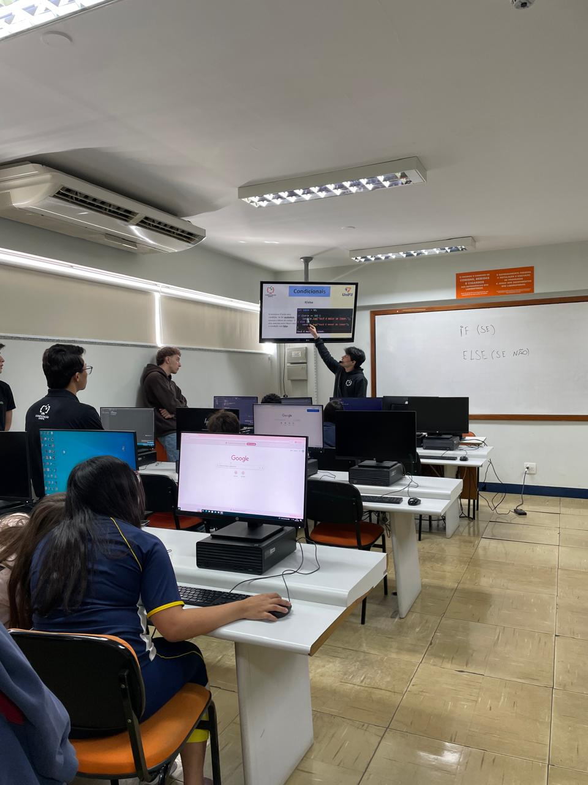

Relatório – 10ª Aula
Data: 11/05/2026
Turma: 8º e 9º ano
Instrutor: Kawan
Relatório – Revisão de Condicionais e Laços de Repetição
A aula de hoje foi focada na consolidação dos tópicos abordados anteriormente, servindo como um fechamento para o ciclo de lógica de programação com JavaScript. O objetivo principal foi reforçar os conceitos que geraram mais dúvidas e garantir que a base esteja sólida para as próximas etapas do projeto.
Iniciamos o encontro com uma revisão teórica e prática sobre as condicionais e os laços de repetição. Revisitamos como o JavaScript interpreta diferentes cenários através de estruturas como o if else e o switch case, além de reforçar a mecânica de automação dos laços (for e while). Essa recapitulação foi essencial para desmistificar a complexidade que os alunos sentiram na introdução desses conteúdos.
Após a revisão, seguimos para uma etapa de exercícios práticos onde os alunos trabalharam em um documento de questões com perguntas específicas sobre o conteúdo, o que incentivou a turma a pensar na sintaxe e na lógica por trás de cada comando. Logo após, realizamos alguns Kahoots que, além de proporcionar um momento de descontração, permitiram avaliar a absorção da matéria de forma leve e competitiva, testando os conhecimentos de maneira dinâmica.
Com essa aula, finalizamos oficialmente os conteúdos específicos de JavaScript puro. O cronograma para a próxima semana já está definido: iniciaremos a criação de sites utilizando HTML e CSS. Essa transição é muito aguardada, pois os alunos começarão a ver a aplicação visual de tudo o que aprenderam até agora.
